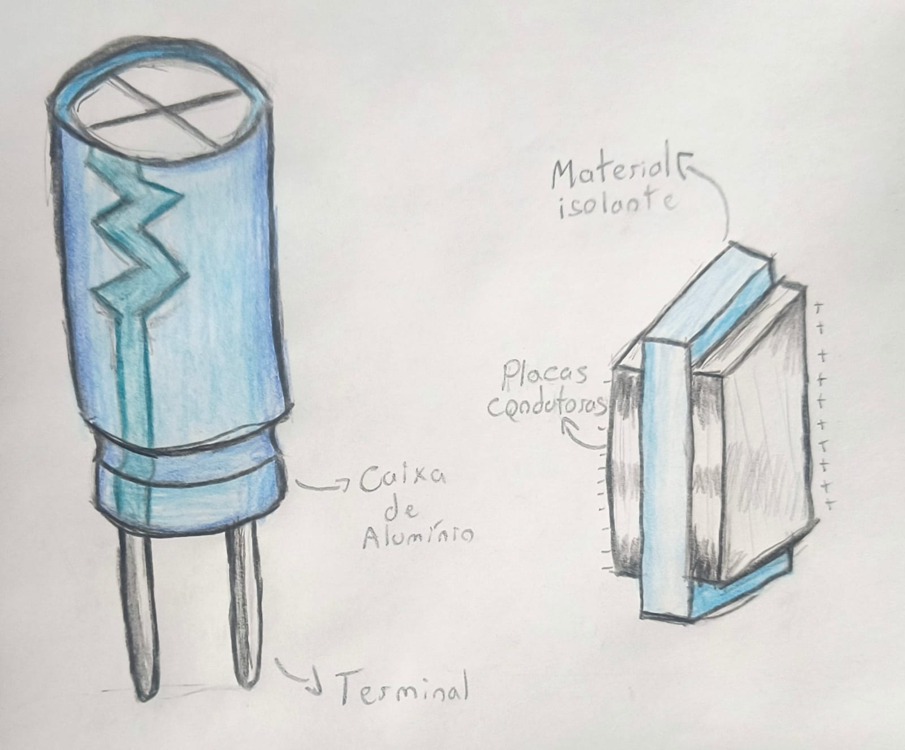
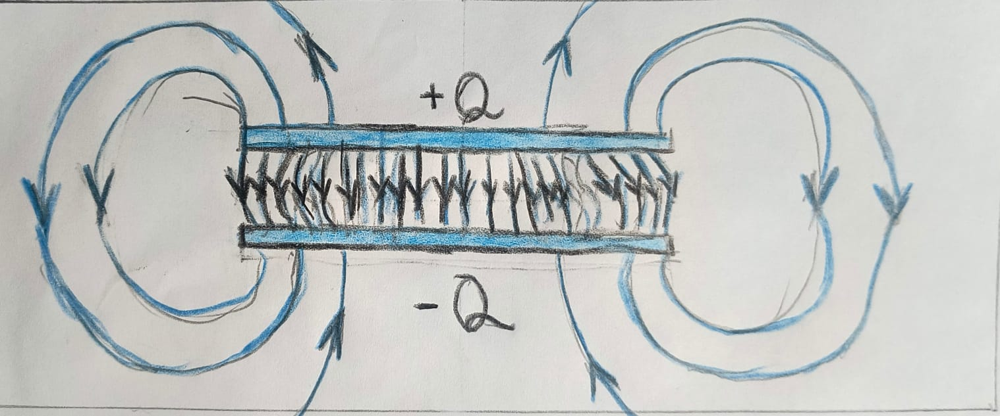
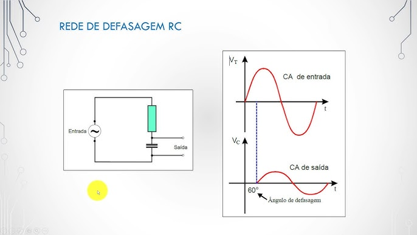
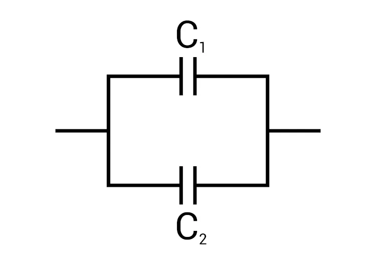
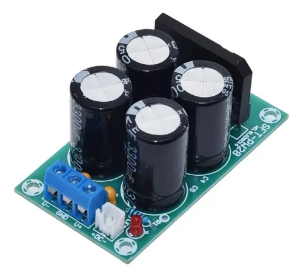
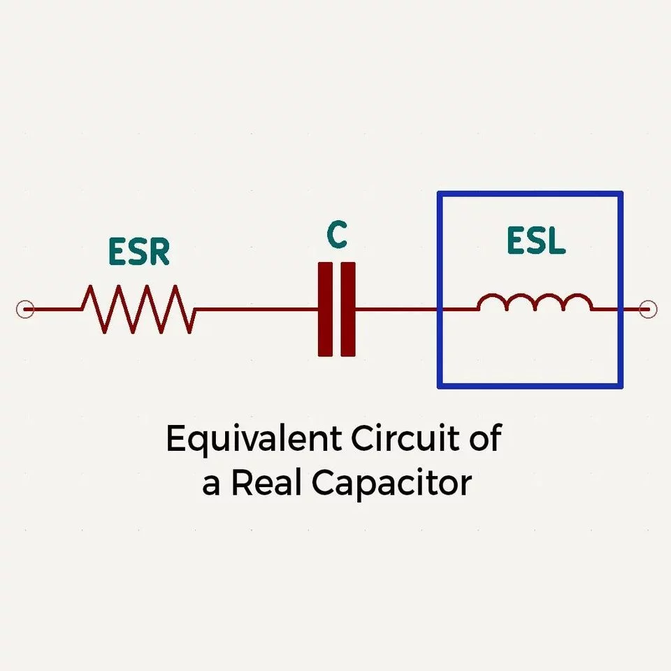

Um capacitor é um dispositivo capaz de armazenar energia elétrica na forma de um campo elétrico estabelecido entre dois condutores separados por um material isolante, chamado dielétrico. Diferente de uma bateria, ele não produz energia nem cria carga elétrica: sua função é separar cargas já existentes.
Quando conectado a uma fonte, elétrons são deslocados de uma placa para outra, gerando um acúmulo de cargas opostas. Essa separação cria uma diferença de potencial e um campo elétrico, que é onde a energia fica armazenada.
Essa equação mostra que a capacitância mede a capacidade de armazenar carga por unidade de tensão.
Essa expressão revela algo fundamental: a capacitância depende diretamente da geometria do sistema físico. Aumentar a área das placas aumenta a capacidade de armazenamento, enquanto aumentar a distância reduz essa capacidade. O material dielétrico também influencia fortemente através da permissividade elétrica.

Durante o carregamento, elétrons se acumulam em uma das placas enquanto são removidos da outra. Isso cria um campo elétrico crescente entre elas. Esse processo não ocorre instantaneamente, pois depende da resistência do circuito e da capacitância do sistema.
A formação desse campo elétrico é o que armazena energia no capacitor. Quanto maior a diferença de potencial entre as placas, maior o campo elétrico e maior a energia armazenada.
A energia de um capacitor não está localizada em um ponto específico, mas distribuída no campo elétrico entre as placas. Essa é uma diferença conceitual importante em relação a sistemas mecânicos ou térmicos.
A dependência quadrática da tensão indica que dobrar a tensão quadruplica a energia armazenada. Isso torna a tensão (ou DDP) um fator extremamente relevante no projeto de circuitos.
Na prática, essa energia pode ser liberada rapidamente, o que permite ao capacitor atuar como um reservatório temporário, estabilizando tensões e fornecendo energia em momentos de pico.

O comportamento dinâmico do capacitor é descrito pela relação entre corrente e variação da tensão:
Essa equação mostra que o capacitor responde apenas a variações de tensão. Se a tensão for constante, não há corrente. Se a tensão variar rapidamente, a corrente pode ser elevada.
A constante de tempo determina a velocidade de resposta do circuito. Ela define a escala temporal do carregamento e da descarga.
Em corrente alternada, o capacitor apresenta uma oposição chamada reatância capacitiva. Ela depende da frequência: sinais de alta frequência passam com facilidade, enquanto sinais de baixa frequência são bloqueados.
Em um circuito RC, o carregamento do capacitor segue uma evolução exponencial:
Isso significa que o capacitor nunca atinge instantaneamente o valor final, mas se aproxima dele ao longo do tempo.
Em t = τ, a tensão atinge aproximadamente 63,2% do valor final, o que define uma referência importante para análise temporal.
1000 Ω
10 μF
O comportamento do capacitor em circuitos elétricos é dado pela equação:
Isso significa que ele responde apenas a variações de tensão. Em corrente contínua, após o carregamento, a corrente zera e o capacitor se comporta como circuito aberto.
Essa constante define a velocidade do processo: quanto maior, mais lento o circuito responde.
Em altas frequências, o capacitor conduz melhor; em baixas, ele bloqueia o sinal.

Assim como resistores, capacitores podem ser associados em série ou em paralelo, alterando a capacitância equivalente do circuito e o comportamento de armazenamento de energia.
Quando capacitores estão em paralelo, todos estão submetidos à mesma diferença de potencial. Nesse caso, a capacitância equivalente é a soma direta das capacitâncias individuais:
Isso ocorre porque a área efetiva de armazenamento aumenta. Cada capacitor contribui diretamente para armazenar mais carga total no sistema.
Nesse tipo de associação:
• A tensão é a mesma em todos os capacitores
• As cargas se somam
• A capacitância equivalente é maior que qualquer capacitor individual

Quando capacitores estão em série, a carga armazenada em cada um é a mesma, mas a tensão se divide entre eles. A capacitância equivalente é dada por:
Nesse caso, a capacitância equivalente sempre será menor que qualquer capacitor individual, pois o sistema se comporta como se a distância entre placas aumentasse.
Nesse tipo de associação:
• A carga é a mesma em todos os capacitores
• A tensão se divide entre eles
• A capacitância equivalente diminui
A diferença entre as associações pode ser entendida fisicamente:
Paralelo: aumenta a área efetiva → maior capacidade de armazenar carga
Série: aumenta a distância efetiva → menor capacidade de armazenar carga
Essas configurações são amplamente utilizadas em circuitos reais para ajustar valores de capacitância, suportar maiores tensões ou adaptar o comportamento do circuito conforme necessário.
Capacitores são fundamentais na eletrônica moderna por sua capacidade de armazenar energia e responder rapidamente.
Após retificação, a tensão possui ondulações. O capacitor suaviza esse efeito armazenando energia nos picos e liberando nas baixas.
Fornece corrente instantânea para circuitos digitais, evitando quedas de tensão.
Bloqueia corrente contínua e permite sinais alternados.
Circuitos RC criam atrasos controlados usando comportamento exponencial.
Utilizados para armazenamento rápido de energia e sistemas modernos.

Capacitores reais possuem limitações físicas que afetam seu desempenho.
Algumas delas são:
Causa perdas de energia e aquecimento.
Indutância parasita que domina em altas frequências.
O capacitor real não melhora indefinidamente com frequência.
Excesso de tensão pode causar falha do componente.

O capacitor é um componente fundamental porque atua simultaneamente em três dimensões essenciais dos circuitos elétricos:
Energia: armazena e libera energia rapidamente
Tempo: introduz comportamento exponencial e memória
Frequência: responde de forma diferente conforme o sinal varia
Essa combinação explica por que ele aparece em praticamente todos os sistemas eletrônicos, desde fontes de alimentação até circuitos de comunicação e sistemas de potência.
Mais do que um simples componente, o capacitor é uma ferramenta que permite controlar o comportamento físico dos circuitos elétricos.